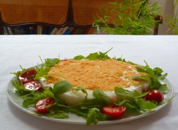

CRUJIENTE DE QUESO DE CABRA Y PARMESANO
Ingredientes
- 150 g de queso de cabra Valle del Tiétar, Colmenar, Málaga
- 75 g de queso parmesano
- 50 g de mascarpone natural --ver en LACTEOS CASEROS de esta página-- o de crème fraîche --ver receta en el mismo apartado
- Sal, pimienta
- 3 hojas de gelatina –4,6 g
- Agua
- 2 claras de huevo muy frescas
- ½ cuch de zumo de limón
- 50 g de miga de pan blanco que no esté seco
- 4 puñados de hojas de rúcola
- 12 tomates cherry de pera
- Vinagre de PX o de Módena, vinagre de Jerez, aceite de oliva virgen extra PORTUS de Hacienda Fuencubierta

Cometí el error una y otra vez de montarla con nata. Quedaba pesada, demasiado cremosa y consistente. El otro día pensé –no comprendo cómo no se me había ocurrido antes– que con claras quedaría mucho mejor. La nata enmascara todos los sabores con su mantecosidad y las claras, por el contrario, dan sutileza sin interferir con los otros aromas ni añadir consistencia o grasa.
En época muy fría se puede disminuir la cantidad de gelatina a 2 y 1/2 hojas. Cambiar los ingredientes de la ensalada para adaptarla a la temporada.

Encender el horno a 175º C
Rallar el queso parmesano. Desmenuzar en el vaso de una batidora de aspas el pan sin llegar a convertirlo en pan rallado, que quede en migas del tamaño de lentejas –por eso no puede ser ya seco, porque se hace polvo enseguida. Revolverlo con pimienta al gusto y unos 40 g del queso parmesano rallado. Sobre un papel de horno extendido en una bandeja de horno colocar un aro de unos 24 cm. Esparcir las migas por igual y apretarlas muy bien con la palma de la mano para apelmazarlas.
En otro papel colocado en otra bandeja dibujar con un lápiz un círculo de 24 cm. Dar la vuelta al papel de horno y esparcir el resto del queso parmesano rallado dentro del círculo. Introducir ambas bandejas en el horno hasta que esté con un dorado ligero el queso –tardará menos que el pan– y el pan. Sacar del horno y dejar enfriar sin quitar de las bandejas ni el pan del aro, pero comprobar que no se ha pegado en ningún punto al aro. Cuando la base de pan y queso esté consistente colocarla sobre la fuente de servicio con el aro. Introducir en el frío.
Poner a remojo en abundante agua muy fría la gelatina y acercar un cacillo con 3 cucharadas de agua al fuego. Cuando la gelatina esté humedecida –3-4 minutos—echarla en el cazo de las 3 cucharadas de agua casi hirviendo ya fuera del fuego y fundirla.
Retirar al queso de cabra la corteza de forma muy superficial. Triturarlo con un tenedor junto con el mascarpone o la créme fraîche –comerciales o caseros– y añadir pimienta al gusto. Aligerar con 3-4 cucharadas de agua hasta conseguir una crema espesa.
Batir las claras añadiendo el zumo de limón cuando hagan las primeras espumas.
Verter la gelatina templada y aún líquida –si se hubiera cuajado o enfriado mucho, calentarla sobre fuego muy suave– sobre el queso, unir bien e integrar las claras en dos veces, como para un bizcocho. Probar de sal y rectificar.
Verter la mezcla dentro el aro de montaje que rodea la galleta de parmesano y pan y dejar que cuaje en el frío. En ½ hora o un poco más estará en su punto.
Mientras, lavar y preparar la ensalada en una ensaladera, los tomates cortados al medio. Hacer el aliño al gusto con vinagre, sal, pimienta y aceite de oliva virgen extra y revolverlo con la ensalada justo antes de servir.
Retirar el aro de montaje. Con una espátula grande y larga, o dos cruzadas, pasar el círculo de parmesano a la parte superior de la tarta. Suele romperse, porque es muy frágil, pero no importa. Se coloca a trozos. Adornar la fuente colocando la ensalada alrededor, para servirla.